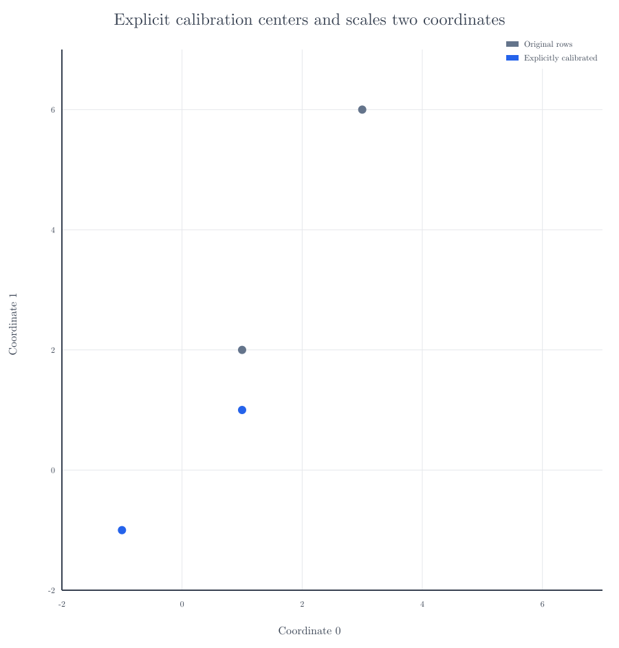
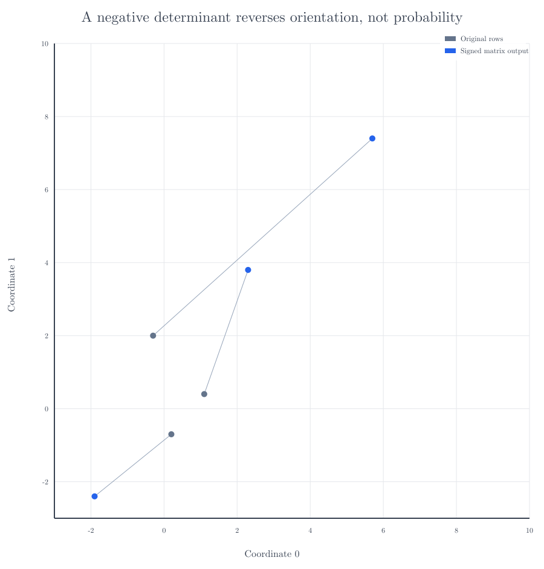
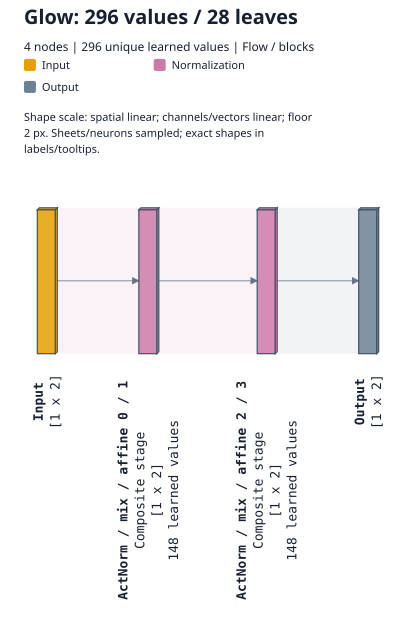
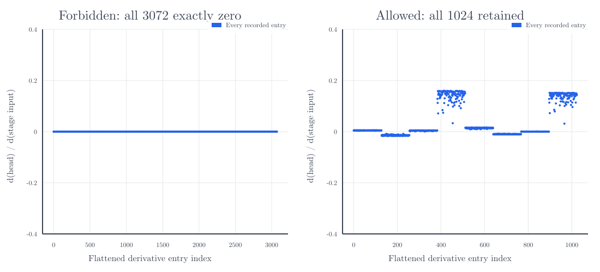
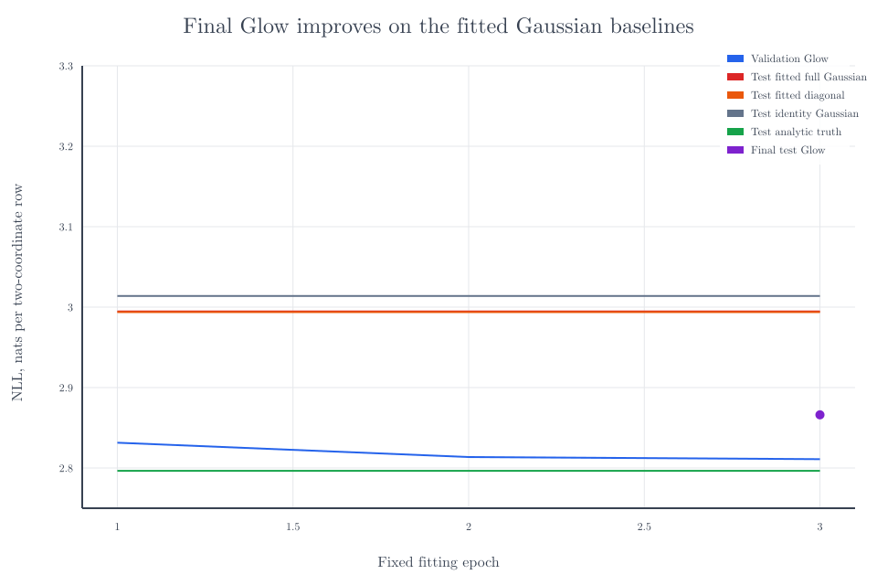
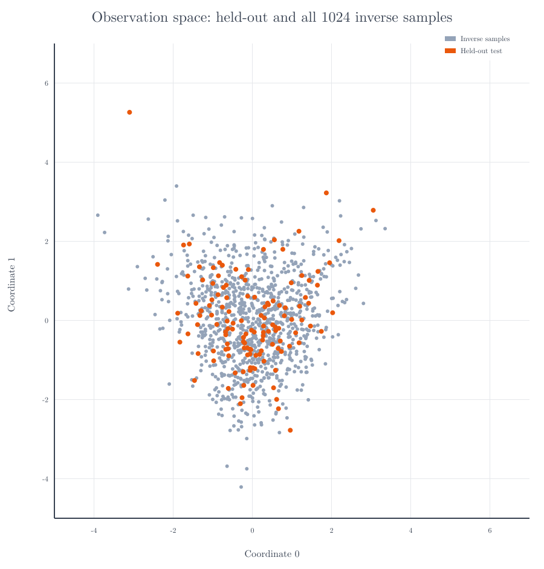
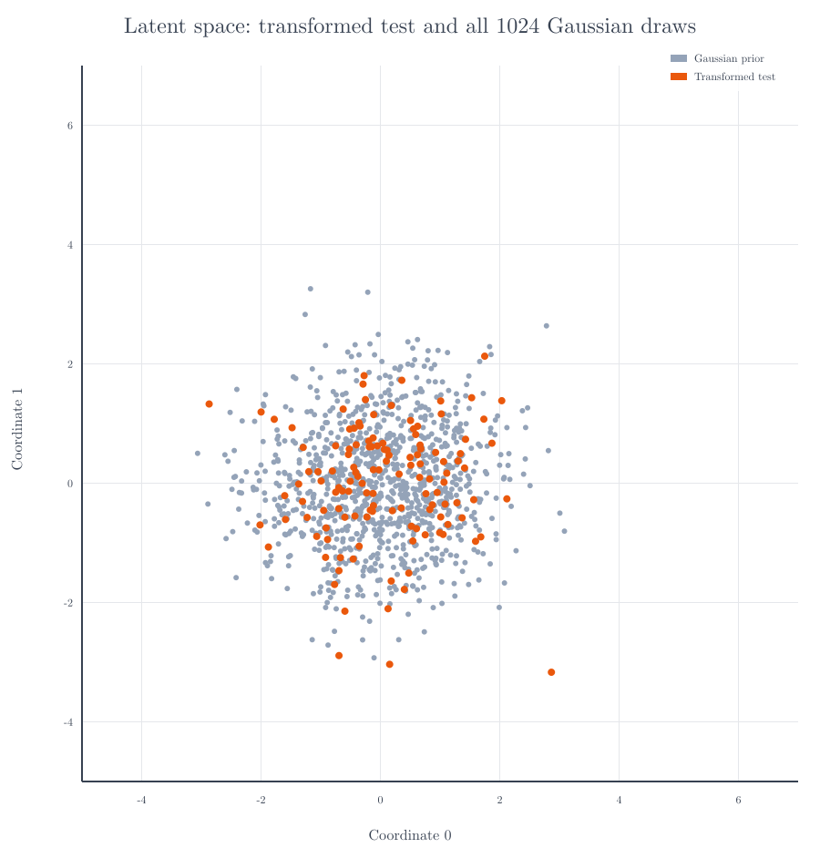
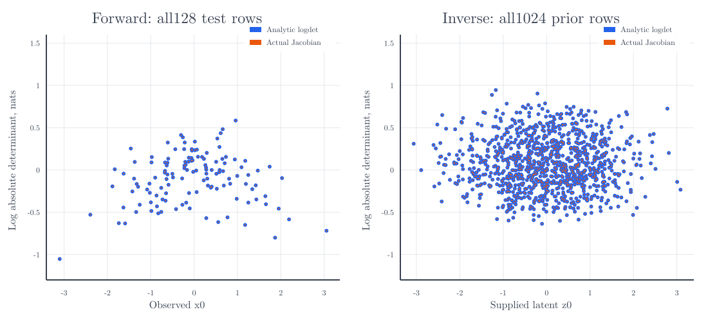
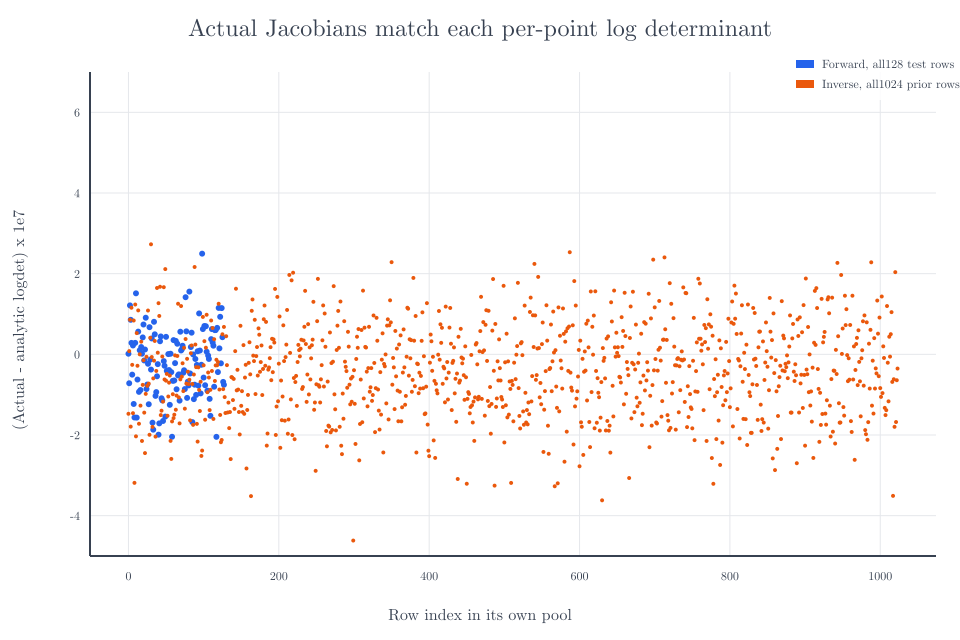
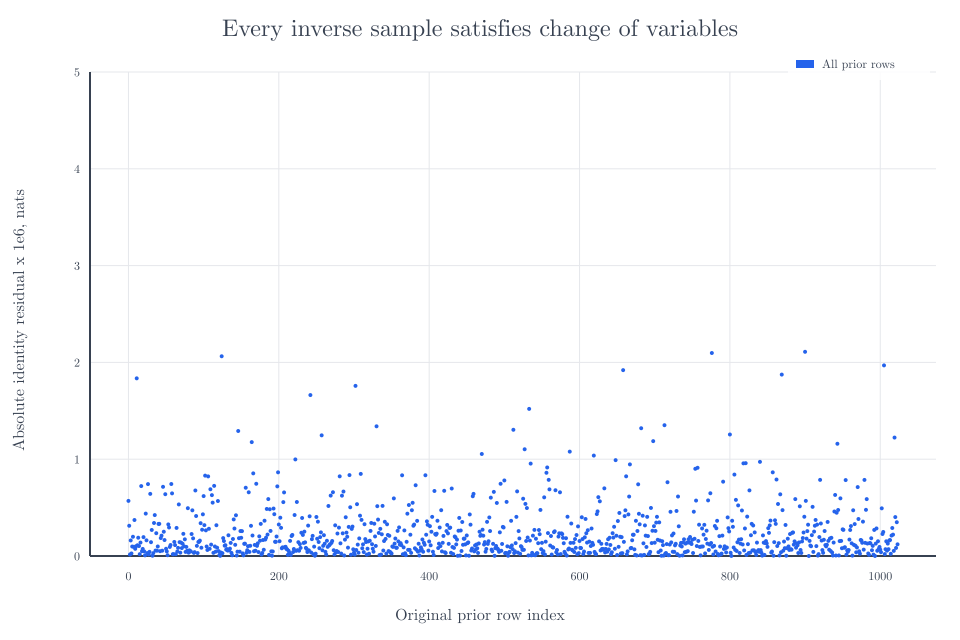

Glow: Explicit Calibration and Signed Invertible Mixing
Abstract
An invertible density model must evaluate a normalized likelihood and generate observations from a simple latent distribution. Learned normalization and coordinate mixing let successive affine couplings operate on different views of those observations. This native C++ study checks explicit ActNorm calibration and a negative-determinant mixing matrix before fitting the original compact Glow model. Its complete program preserves the once-only first-32 fitting-row calibration, all 48 Adam writes, both actual Jacobians and all 1,024 inverse samples. The fixed-final test NLL is 2.866107941 nats per two-coordinate row, better than the fitting-only full Gaussian's 2.994631823, while analytic truth scores 2.796480843. This is a reproducible two-coordinate CPU teaching model, not the full multiscale image architecture or a tuned benchmark result.
Compose normalization, mixing and affine coupling in an invertible step
[Kingma and Dhariwal, Glow: Generative Flow with Invertible 1x1 Convolutions (2018)](https://arxiv.org/abs/1807.03039) uses ActNorm, learned invertible mixing and affine couplings. The source adapts four steps to two coordinates. ActNorm is y=(x+b)exp(a) with a scalar log determinant sum(a). Row-vector mixing is u=yW for a learned 2×2 matrix, contributing log|det W|. A coupling preserves coordinate A and changes the other to u_B exp(s(u_A))+t(u_A), contributing s(u_A). The conditioner is 1->16 tanh->2, with bounded *s=.8tanh(raw)*. Alternate the conditioning coordinate by stage index modulo two.
For four stages, the exact change-of-variables calculation is
The mean negative log density is measured in nats per two-dimensional row. There is *no extra final global scale* in this source. Sampling supplies z from the Gaussian base, then reverses coupling, mixing and ActNorm in stages 3,2,1,0. Recompute each conditioner on its own inverse path. The trained run has positive actual Jacobian determinants; the mixing primitive also supports negative signs, checked explicitly below. In either case likelihood uses a log *absolute* determinant, never log of a negative number.
#include <dm/dm.hpp>
int main(){
std::filesystem::create_directories("build");dm::graphics::Diagram d(28,1150);
dm::graphics::DiagramNodeStyle s;s.width=10;s.height=5;s.font_size=32;
d.node("norm",{-24,0},"Explicit ActNorm\n(x+b) exp(a)",s)
.node("mix",{-11,0},"Signed 2x2 mixing\nRow vector y W",s)
.node("couple",{2,0},"Bounded affine\nKeep one coordinate",s)
.node("repeat",{15,0},"Repeat 4 steps\nReverse all to sample",s)
.node("density",{28,0},"Gaussian base\nAdd all log |det|",s)
.edge("norm","mix").edge("mix","couple").edge("couple","repeat").edge("repeat","density")
.save_svg("build/glow_method.svg");
}
Hand-check ActNorm moments and install the proposed parameters explicitly
For calibration rows (1,2) and (3,6), coordinate means are (2,4) and population variances (1,4), using divisor N=2. The source's proposals are
The ridge keeps constant coordinates finite; output variance is v/(v+epsilon), not exactly one. A diagonal transform scales coordinates but does not decorrelate them. The native calibration helper returns detached proposals and changes no store. The caller installs them explicitly. Ordinary forward calls never infer statistics or recalibrate on their inputs.
#include <dm/dm.hpp>
int main(){
namespace n=dm::nn;namespace m=n::models;auto type=n::DType::Float64;
auto x=n::from_vector(std::vector<double>{1,2,3,6},{2,2});auto fit=m::FlowActNormCalibration(x);
if(fit.mean.to_vector<double>()!=std::vector<double>{2,4}||fit.variance.to_vector<double>()!=std::vector<double>{1,4})throw std::runtime_error("Worked population moments");
n::ParameterStore p(1,type);auto identity=m::FlowActNorm(p,"norm",x);
if(!n::equal_bits(identity.value,x))throw std::runtime_error("No automatic calibration");
p.set("norm/bias",fit.bias);p.set("norm/log_scale",fit.log_scale);auto before=p.flatten();
auto out=m::FlowActNorm(p,"norm",x),rec=m::FlowActNorm(p,"norm",out.value,true);
auto expected=fit.variance/(fit.variance+1e-6);
if(n::max(n::abs(rec.value-x)).item()>1e-14||n::max(n::abs(n::mean(out.value,{0}))).item()>1e-14||n::max(n::abs(n::mean(n::square(out.value),{0})-expected)).item()>1e-14||p.flatten()!=before)throw std::runtime_error("Worked ActNorm");
dm::graphics::RPlot::create().points(n::select(x,1,0).to_vector<double>(),n::select(x,1,1).to_vector<double>(),"Original rows",{100,116,139},6)
.points(n::select(out.value,1,0).to_vector<double>(),n::select(out.value,1,1).to_vector<double>(),"Explicitly calibrated",{37,99,235},6)
.size(900,942).margins(90,24,72,84).x_limits(-2,7).y_limits(-2,7)
.x_label("Coordinate 0").y_label("Coordinate 1").title("Explicit calibration centers and scales two coordinates")
.save_svg("build/glow_actnorm_toy.svg");
std::print("| Coordinate | Mean | Population variance | Bias | Log scale |\n|---|---:|---:|---:|---:|\n");
auto mu=fit.mean.to_vector<double>(),v=fit.variance.to_vector<double>(),a=fit.log_scale.to_vector<double>();
for(int c=0;c<2;++c)std::print("|{}|{}|{}|{}|{:.12f}|\n",c,mu[c],v[c],-mu[c],a[c]);
}| Coordinate | Mean | Population variance | Bias | Log scale |
|---|---|---|---|---|
| 0 | 2 | 1 | -2 | -0.000000500000 |
| 1 | 4 | 4 | -4 | -0.693147305560 |

Hand-check a signed mixing matrix, its inverse and actual Jacobian
Use W=[[1,2],[3,4]], det W=−2. With row vectors, y=xW, the input Jacobian is W transpose, also determinant −2. The map reverses orientation and multiplies area by two; its forward log|det| is log2 and inverse log|det| is −log2. For example (1,1) maps to (4,6). The native inverse uses the adjugate divided by det W. It rejects singular matrices; negative signs are valid.
The compact source computes .5log((ad−bc)²), preserving its Float32 arithmetic. Extreme invertible matrices whose squared determinant overflows or underflows can therefore be rejected. The fixture here stays far from that limitation.
#include <dm/dm.hpp>
int main(){
namespace n=dm::nn;namespace m=n::models;auto type=n::DType::Float64;n::ParameterStore p(1,type);
p.set("mix/W",n::from_vector(std::vector<double>{1,2,3,4},{2,2}));
auto x=n::from_vector(std::vector<double>{.2,-.7,1.1,.4,-.3,2},{3,2}).requires_grad_();
auto out=m::FlowMix2D(p,"mix",x),rec=m::FlowMix2D(p,"mix",out.value,.35,true);
auto a=n::grad(n::sum(n::slice_axis(out.value,1,0,1)),{x},n::GradOptions{true,false,false})[0];
auto b=n::grad(n::sum(n::slice_axis(out.value,1,1,2)),{x})[0];
auto determinant=n::select(a,1,0)*n::select(b,1,1)-n::select(a,1,1)*n::select(b,1,0);
if(n::max(n::abs(determinant+2.)).item()!=0||std::abs(out.logdet.item()-std::log(2.))>1e-14||n::max(n::abs(rec.value-x)).item()>1e-14)throw std::runtime_error("Signed mixing/Jacobian");
auto original_x=n::select(x,1,0).to_vector<double>(),original_y=n::select(x,1,1).to_vector<double>();
auto mapped_x=n::select(out.value,1,0).to_vector<double>(),mapped_y=n::select(out.value,1,1).to_vector<double>();
dm::graphics::RPlot::create().segments(original_x,original_y,mapped_x,mapped_y,{148,163,184})
.points(original_x,original_y,"Original rows",{100,116,139},5)
.points(mapped_x,mapped_y,"Signed matrix output",{37,99,235},5)
.size(900,942).margins(90,24,72,84).x_limits(-3,10).y_limits(-3,10)
.x_label("Coordinate 0").y_label("Coordinate 1").title("A negative determinant reverses orientation, not probability")
.save_svg("build/glow_mixing_toy.svg");
std::print("All3 actual Jacobian determinants=-2; forward log|det|={:.12f}, inverse={:.12f}; maximum roundtrip error {:.3g}.\n",out.logdet.item(),rec.logdet.item(),n::max(n::abs(rec.value-x)).item());
}All3 actual Jacobian determinants=-2; forward log|det|0.693147180560, inverse-0.693147180560; maximum roundtrip error 2.22e-16.

Hand-check the banana transform before generating its pools
The source distribution is deliberately synthetic and analytic:
u,v independent standard normals, x0=u, x1=v+.5(u²−1). It is a triangular
map with determinant one and inverse v=x1−.5(x0²−1). Therefore its true log
density is the standard Gaussian log density of that inverse. For v=0 and
u=(2,-1,0,1,2), the changed coordinates are (1.5,0,.5,0,1.5).
The density has one curved mode. This analytic invertible transform gives an
exact reference likelihood, independently of the learned Glow model. Its
unit determinant describes the data generator; the fitted model has its own
input-dependent determinant, which must be included in its likelihood.
#include <dm/dm.hpp>
int main(){
namespace n=dm::nn;namespace m=n::models;auto type=n::DType::Float64;
auto u=n::from_vector(std::vector<double>{-2,-1,0,1,2},{5});auto base=n::stack({u,n::zeros({5},type)},1);
auto points=m::BananaPoints(base,.5,type);auto target=n::from_vector(std::vector<double>{1.5,0,-.5,0,1.5},{5});
if(!n::equal_bits(n::select(points,1,1),target)||n::max(n::abs(m::BananaLogProbability(points)-m::StandardNormalLogProbability(base))).item()>1e-14)throw std::runtime_error("Analytic banana");
auto axis=n::arange(0,129,1,type)/32.-2.;auto curve=m::BananaPoints(n::stack({axis,n::zeros({129},type)},1),.5,type);
dm::graphics::RPlot::create().lines(axis.to_vector<double>(),n::select(curve,1,1).to_vector<double>(),"v=0 banana curve",{37,99,235})
.points(u.to_vector<double>(),std::vector<double>(5,0),"Base v=0",{100,116,139},5)
.points(u.to_vector<double>(),target.to_vector<double>(),"Five native points",{220,38,38},4)
.y_limits(-.7,2.6).x_label("u = x0").y_label("x1 = v + .5(u^2 - 1)")
.title("Unit-volume bending gives an analytic teaching density").save_svg("build/glow_banana_toy.svg");
std::print("Five exact banana coordinates; native analytic log densities match their inverse standard-normal coordinates.\n");
}Five exact banana coordinates; native analytic log densities match their inverse standard-normal coordinates.

Trace the executed 296-value model and preserve initialization order
Each step has four ActNorm values (bias and log scale for two coordinates), four mixing entries and 66 conditioner values: *74 per step, 296 in 28 tensors*. The mixing matrix begins as a rotation by .35+.2*i radians in stage i. Cosine and sine are computed in Double, rounded once to Float32 and promoted if needed; this initializer consumes no random draws. Conditioner hidden weights use normal deviation .3 and bias .05; two-head weights use deviation .01 and zero biases. Native store seed 9503 warms all forward leaves before calibration. There is no additional final global-scale leaf. The optional original TensorFlow initial-array directory is absent, so its auto default uses this native state.
#include <dm/dm.hpp>
int main(){
namespace n=dm::nn;n::ParameterStore p(9503);
n::Module model([&](const n::Tensor& x){auto o=n::models::GlowDensity(p,x);
n::model_stage("ActNorm / mix / affine 0 / 1",x,o.coupling1);
return n::model_stage("ActNorm / mix / affine 2 / 3",o.coupling1,o.latent);
},"Glow: 296 values / 28 leaves");
n::ModelPlotOptions options;options.detail=n::ModelPlotDetail::Blocks;options.sizing.minimum_extent=2;options.sizing.max_planes=2;
auto figure=model.plot(n::zeros({1,2}),options);
if(figure.parameter_count()!=296||p.size()!=28)throw std::runtime_error("Executed Glow census");
figure.save_svg("build/glow_network.svg");
}
Keep once-only calibration, all fitting writes and inverse sampling explicit
The original procedural banana protocol has *512 fit / 128 validation / 128 test* rows. Raw midpoint-MT19937 Double Box-Muller banks use seeds 9203/9209/9221, cosine partner before sine partner. Transform x0=u, x1=v+.5(u²−1) in Double, then cast observations once to Float32. Source IDs start at 0/10000/20000; they identify generated rows, not real-world subjects. No downloaded or substituted dataset is used. All 1,024 prior rows come from seed 9257 and cast once to Float32; only these latent values enter inverse sampling.
Warm all 296 values, construct Adam, then calibrate *once on original fitting rows 0..31 before shuffling*. In stage order 0,1,2,3, recompute the actual current ActNorm input, derive its Double population moments, cast the proposed bias and log scale once to Float32 and install them explicitly. Earlier installed stages change each later stage's calibration input. Calibrating all stages from raw observations or recalibrating each batch would change this experiment.
After calibration, BatchOrder(512,32,9521) supplies 16 full batches per epoch. Fit three fixed epochs, 48 Adam(.003) writes with betas(.9,.999), epsilon1e-8 and no weight decay. Epoch three is the predefined final selection. Native likelihood, explicit reverse-mode partials and caller-owned optimizer writes remain visible. Snapshot restore, repeated samples/Jacobians, single/batch parity, both roundtrips and immutable inference are checked.
For exact replay the model sets rounded_constant=true: log(2*pi) is rounded to Float32 before later promotion. Analytic truth and Gaussian baselines use the full Double constant. Fitting-only moments use the MLE divisor N, not N−1; held-out rows never enter them. Native cumulative sums preserve the original serial divide-first Double reductions. The complete program also retains the original separate Float32 signed-mixing fixture and every raw calibration capture. Numerical/model operations are canonical API calls; local functions package results, checks and file writes. All calibration/fitting/sampling orchestration stays in this editable program.
#include <dm/dm.hpp>
namespace n=dm::nn;namespace m=n::models;namespace fs=std::filesystem;
using T=n::Tensor;using A=std::map<std::string,T>;
void Require(bool ok,const std::string& what){if(!ok)throw std::runtime_error(what);}
void Save(const fs::path& file,const A& fields){
n::NamedTensors named;for(const auto& [key,value]:fields)named.emplace_back(key,value);
n::save_npz(file.string(),named);
}
A Weights(const n::ParameterStore& p){
A out;for(const auto& name:p.names())out.emplace(name,p.at(name).detach().clone());return out;
}
bool Equal(const A& a,const A& b){
if(a.size()!=b.size())return false;
for(const auto& [key,value]:a)if(!b.count(key)||!n::equal_bits(value,b.at(key)))return false;
return true;
}
T Column(const T& x,int k){return n::slice_axis(x,1,k,k+1);}
A Evaluate(n::ParameterStore& p,const T& x){
auto input=x.detach().clone().requires_grad_();auto path=m::GlowDensity(p,input);
auto rec=m::GlowInverse(p,path.latent);auto density=m::NormalFlowDensity(path.latent,path.logdet,true);
A out{{"latent",path.latent},{"unscaled",path.unscaled},{"reconstruction",rec.value},
{"base_log_probability",density.base_log_probability},{"log_probability",density.log_probability},
{"forward_logdet",path.logdet},{"inverse_logdet",rec.logdet},{"loss",density.loss},
{"actnorm_input0",path.actnorm_input0},{"actnorm_output0",path.actnorm_output0},{"mixed0",path.mixed0},{"coupling0",path.coupling0},{"coupling_logdet0",path.coupling_logdet0},{"coupling_scale0",path.coupling_scale0},{"coupling_shift0",path.coupling_shift0},{"actnorm_input1",path.actnorm_input1},{"actnorm_output1",path.actnorm_output1},{"mixed1",path.mixed1},{"coupling1",path.coupling1},{"coupling_logdet1",path.coupling_logdet1},{"coupling_scale1",path.coupling_scale1},{"coupling_shift1",path.coupling_shift1},{"actnorm_input2",path.actnorm_input2},{"actnorm_output2",path.actnorm_output2},{"mixed2",path.mixed2},{"coupling2",path.coupling2},{"coupling_logdet2",path.coupling_logdet2},{"coupling_scale2",path.coupling_scale2},{"coupling_shift2",path.coupling_shift2},{"actnorm_input3",path.actnorm_input3},{"actnorm_output3",path.actnorm_output3},{"mixed3",path.mixed3},{"coupling3",path.coupling3},{"coupling_logdet3",path.coupling_logdet3},{"coupling_scale3",path.coupling_scale3},{"coupling_shift3",path.coupling_shift3}};
for(int k=0;k<2;++k)out["jacobian_row"+std::to_string(k)]=n::grad(n::sum(Column(path.latent,k)),{input},n::GradOptions{true,false,false})[0];
for(auto& [key,value]:out)value=value.detach().contiguous();return out;
}
A Sample(n::ParameterStore& p,const T& z){
auto prior=z.detach().clone().requires_grad_();auto inv=m::GlowInverse(p,prior);
auto roundtrip=m::GlowDensity(p,inv.value).latent;
A out{{"prior",z},{"samples",inv.value},{"prior_roundtrip",roundtrip},{"inverse_logdet",inv.logdet}};
for(int k=0;k<2;++k)out["inverse_jacobian_row"+std::to_string(k)]=n::grad(n::sum(Column(inv.value,k)),{prior},n::GradOptions{true,false,false})[0];
for(auto& [key,value]:out)value=value.detach().contiguous();return out;
}
T Loss(n::ParameterStore& p,const T& x){auto o=m::GlowDensity(p,x);return m::NormalFlowDensity(o.latent,o.logdet,true).loss;}
A NamedGradients(n::ParameterStore& p,const std::vector<T>& gradients){
A out;auto names=p.names();for(std::size_t i=0;i<names.size();++i)out[names[i]]=gradients[i];return out;
}
// Preserve the source's serial Double reductions without hiding numerical math
// in host loops: divide each row first, native cumulative sum, then last row.
T SerialMean(const T& values){return n::select(n::cumsum(n::cast(values,n::DType::Float64)/double(values.size(0)),0),0,values.size(0)-1);}
T ActualLogdet(const A& fields,const std::string& prefix){
auto a=n::cast(fields.at(prefix+"jacobian_row0"),n::DType::Float64);
auto b=n::cast(fields.at(prefix+"jacobian_row1"),n::DType::Float64);
auto det=n::reshape(Column(a,0)*Column(b,1)-Column(a,1)*Column(b,0),{-1});
Require(n::min(det).item()>0,"Orientation-preserving actual Jacobian");return n::log(det);
}
int main(){
n::set_num_threads(4);fs::path root="build/glow_density";fs::create_directories(root);
// Original signed-matrix fixture is separate from the296-value model.
{
n::ParameterStore p(1);auto input=n::from_vector(std::vector<float>{.2f,-.7f,1.1f,.4f,-.3f,2.f},{3,2});
m::FlowMix2D(p,"mix0",input,.35);auto matrix=n::from_vector(std::vector<float>{1,2,3,4},{2,2});p.set("mix0/W",matrix);
auto forward=m::FlowMix2D(p,"mix0",input,.35),reverse=m::FlowMix2D(p,"mix0",forward.value,.35,true);
auto gradient=n::grad(n::sum(n::square(forward.value))-forward.logdet,{p.at("mix0/W")})[0];
Require(std::abs(forward.logdet.item()-std::log(2.))<1e-6&&std::abs(reverse.logdet.item()+std::log(2.))<1e-6,"Signed log absolute determinant");
Require(n::max(n::abs(reverse.value-input)).item()<2e-6,"Signed matrix roundtrip");
Save(root/"signed_mixing_fixture.npz",{{"input",input},{"matrix",matrix},{"forward",forward.value.detach()},{"inverse",reverse.value.detach()},
{"forward_logabsdet",forward.logdet.detach()},{"inverse_logabsdet",reverse.logdet.detach()},{"gradient",gradient}});
}
A data;std::vector<T> pools;
for(int split=0;split<3;++split){
const int rows=split?128:512,seed=split==0?9203:split==1?9209:9221;
const std::string name=split==0?"fit":split==1?"validation":"test";
auto base=m::GaussianNoise({2},rows,seed);auto points=m::BananaPoints(base);
data[name+"_base"]=base;data[name+"_points"]=points;
data[name+"_source_ids"]=n::cast(n::arange(split*10000,split*10000+rows),n::DType::Int32);
pools.push_back(points);
}
// Explicit latent-only sampling bank: all 1024 rows, generated once with seed9257.
auto prior=n::cast(m::GaussianNoise({2},1024,9257),n::DType::Float32);
data["sample_prior"]=prior;Save(root/"data.npz",data);
std::ofstream protocol(root/"source_protocol.json");
protocol<<R"JSON({"distribution":"SYNTHETICanalyticbanana","base":"standardGaussian2D","mapping":"x0=u0;x1=u1+.5*(u0^2-1)","true_forward_logdet":0,"fit":512,"validation":128,"test":128,"seeds":[9203,9209,9221],"sample_prior_seed":9257,"sample_prior_count":1024,"source_id_offsets":[0,10000,20000]})JSON"<<'\n';protocol.close();
n::ParameterStore parameters(9503);
{n::NoGradGuard guard;m::GlowDensity(parameters,n::zeros({1,2}));m::GlowInverse(parameters,n::zeros({1,2}));}
Require(parameters.count()==296&¶meters.size()==28,"296 values /28 leaves");
n::OptimizerConfig config;config.kind=n::OptimizerKind::Adam;config.beta1=.9;config.beta2=.999;config.epsilon=1e-8;
n::Optimizer optimizer(parameters,.003,config);
auto calibration=n::take_rows(pools[0],{0,1,2,3,4,5,6,7,8,9,10,11,12,13,14,15,16,17,18,19,20,21,22,23,24,25,26,27,28,29,30,31});
Save(root/"calibration.npz",{{"points",calibration}});
fs::create_directories(root/"calibration_phases");Save(root/"calibration_phases/uncalibrated_arrays.npz",Weights(parameters));
// Explicit once-only sequential initialization. Earlier installed stages
// change each later stage's calibration input. No held-out or shuffled rows.
{
n::NoGradGuard guard;
for(int stage=0;stage<4;++stage){
auto path=m::GlowDensity(parameters,calibration);
auto input=stage==0?path.actnorm_input0:stage==1?path.actnorm_input1:stage==2?path.actnorm_input2:path.actnorm_input3;
Save(root/"calibration_phases"/("step"+std::to_string(stage)+"-input.npz"),{{"input",input}});
auto fit=m::FlowActNormCalibration(input);
parameters.set("actnorm"+std::to_string(stage)+"/bias",fit.bias);
parameters.set("actnorm"+std::to_string(stage)+"/log_scale",fit.log_scale);
}
}
Save(root/"initial_arrays.npz",Weights(parameters));Save(root/"initial_outputs.npz",Evaluate(parameters,pools[2]));
n::BatchOrder order(512,32,9521);
std::ofstream history(root/"history.tsv"),batches(root/"batches.tsv");history.precision(17);
history<<"epoch\tvalidation_nll\tvalidation_mean_forward_logdet\n";batches<<"epoch\tstep\trow\n";
int step=0;T first;
for(int epoch=1;epoch<=3;++epoch){
order.begin_epoch();
for(;;){
auto rows=order.next();if(rows.empty())break;auto batch=n::take_rows(pools[0],rows);
if(step==0){first=batch;Save(root/"first_batch.npz",{{"points",batch}});Save(root/"first_forward.npz",Evaluate(parameters,batch));}
// Complete fitting step: native likelihood, explicit reverse-mode partials,
// caller-owned Adam write. No model helper owns any update or fitting loop.
auto loss=Loss(parameters,batch);auto gradients=n::grad(loss,parameters.parameters());
auto named=NamedGradients(parameters,gradients);Save(root/("batch"+std::to_string(step)+"-gradient.npz"),named);
if(step==0)Save(root/"initial_gradients.npz",named);
optimizer.step(gradients);
Save(root/("batch"+std::to_string(step)+"-after.npz"),Weights(parameters));
Save(root/("batch"+std::to_string(step)+"-iterations.npz"),{{"iterations",n::from_vector(std::vector<std::int64_t>{optimizer.iterations()},{1})}});
if(step==0)Save(root/"first_after.npz",Weights(parameters));
for(auto row:rows)batches<<epoch<<'\t'<<step<<'\t'<<row<<'\n';++step;
}
auto validation=Evaluate(parameters,pools[1]);
history<<epoch<<'\t'<<validation.at("loss").item<float>()<<'\t'<<SerialMean(validation.at("forward_logdet")).item()<<'\n';
Save(root/("epoch"+std::to_string(epoch)+"_arrays.npz"),Weights(parameters));
Save(root/("epoch"+std::to_string(epoch)+"_validation.npz"),validation);
}
Require(step==48&&optimizer.iterations()==48,"All48 Adam writes");history.close();batches.close();
parameters.save((root/"final.npz").string());
Save(root/"final_gradients.npz",NamedGradients(parameters,n::grad(Loss(parameters,first),parameters.parameters())));
n::ParameterStore deployed(9503);
{n::NoGradGuard guard;m::GlowDensity(deployed,n::zeros({1,2}));m::GlowInverse(deployed,n::zeros({1,2}));}
deployed.load((root/"final.npz").string(),true);Require(Equal(Weights(parameters),Weights(deployed)),"Bit-exact weight restore");
auto before=Weights(deployed);auto output=Evaluate(deployed,pools[2]);
Save(root/"outputs.npz",output);Save(root/"model_arrays.npz",Weights(deployed));
auto samples=Sample(deployed,prior);Require(Equal(samples,Sample(deployed,prior)),"Repeat inverse sampling and Jacobians bit exact");
Save(root/"samples.npz",samples);auto sample_density=Evaluate(deployed,samples.at("samples"));Save(root/"sample_density.npz",sample_density);
auto roundtrip=n::abs(n::cast(output.at("reconstruction"),n::DType::Float64)-n::cast(pools[2],n::DType::Float64));
auto prior_error=n::abs(n::cast(samples.at("prior_roundtrip"),n::DType::Float64)-n::cast(prior,n::DType::Float64));
auto actual=ActualLogdet(output,"");auto inverse_actual=ActualLogdet(samples,"inverse_");
auto det_error=n::abs(actual-n::cast(output.at("forward_logdet"),n::DType::Float64));
auto inverse_error=n::abs(inverse_actual-n::cast(samples.at("inverse_logdet"),n::DType::Float64));
auto base=m::StandardNormalLogProbability(n::cast(prior,n::DType::Float64));
auto normalization=n::abs(n::cast(sample_density.at("log_probability"),n::DType::Float64)+n::cast(samples.at("inverse_logdet"),n::DType::Float64)-base);
Require(n::max(roundtrip).item()<5e-6&&n::max(prior_error).item()<5e-6,"Both roundtrips");
Require(n::max(det_error).item()<5e-6&&n::max(inverse_error).item()<5e-6,"Both analytic/actual logdets");
Require(n::max(n::abs(output.at("forward_logdet")+output.at("inverse_logdet"))).item()<5e-6,"Per-point reconstruction logdet cancellation");
Require((n::max(output.at("forward_logdet"))-n::min(output.at("forward_logdet"))).item()>1e-5,"Spatially varying forward logdet");
Require(n::max(normalization).item()<2e-5,"All1024 change-of-variables identities");
auto single=Evaluate(deployed,n::take_rows(pools[2],{0}));
Require(n::max(n::abs(single.at("latent")-n::take_rows(output.at("latent"),{0}))).item()<2e-6,"Single/batch parity");
std::vector<float> grid;for(int y=0;y<128;++y)for(int x=0;x<128;++x){grid.push_back(float((x+.5)/16-4));grid.push_back(float(4-(y+.5)/16));}
auto coordinates=n::from_vector(grid,{128*128,2});auto density=Evaluate(deployed,coordinates);auto truth=m::BananaLogProbability(coordinates);
Save(root/"grid.npz",{{"points",coordinates},{"model_log_probability",density.at("log_probability")},{"true_log_probability",truth}});
// Fit-only MLE moments (divide by N), retaining the original serial Double
// order with native cumsum. No held-out rows enter these two moment estimates.
auto fit=n::cast(pools[0],n::DType::Float64);auto mean=SerialMean(fit);auto centered=fit-mean;
auto covariance=SerialMean(n::expand_dims(centered,2)*n::expand_dims(centered,1));
auto cov=covariance.to_vector<double>();auto test=n::cast(pools[2],n::DType::Float64);
auto a=n::reshape(Column(test,0),{-1})-n::select(mean,0,0),c=n::reshape(Column(test,1),{-1})-n::select(mean,0,1);
auto determinant=n::select(n::select(covariance,0,0),0,0)*n::select(n::select(covariance,0,1),0,1)-n::select(n::select(covariance,0,0),0,1)*n::select(n::select(covariance,0,1),0,0);
Require(determinant.item()>0,"Fitting covariance positive determinant");
auto full=std::log(2*std::acos(-1.))+.5*n::log(determinant)+.5*(a*a*cov[3]-2.*a*c*cov[1]+c*c*cov[0])/determinant;
auto diagonal=std::log(2*std::acos(-1.))+.5*std::log(cov[0]*cov[3])+.5*(a*a/cov[0]+c*c/cov[3]);
auto identity=-m::StandardNormalLogProbability(test);auto true_test=m::BananaLogProbability(pools[2]);
Save(root/"baseline.npz",{{"fit_mean",mean},{"fit_covariance",covariance},{"true_test_log_probability",true_test}});
Save(root/"plot_values.npz",{{"full_gaussian_point_nll",full},{"diagonal_gaussian_point_nll",diagonal},{"identity_point_nll",identity},
{"true_point_nll",-true_test},{"actual_logdet",actual},{"inverse_actual_logdet",inverse_actual},
{"normalization_error",normalization},{"forward_roundtrip_absolute_error",roundtrip},{"inverse_roundtrip_absolute_error",prior_error}});
Require(Equal(before,Weights(deployed)),"All inference immutable");
std::ofstream meta(root/"metrics.json");meta.precision(17);
meta<<"{\"parameters\":296,\"parameter_tensors\":28,\"coupling_layers\":4,\"hidden\":16,\"base\":\"standardGaussian2D\",\"epochs\":3,\"optimizer_updates\":48,\"selected_epoch_fixed_final\":3,\"test_nll\":"<<output.at("loss").item<float>()
<<",\"true_test_nll\":"<<SerialMean(-true_test).item()<<",\"fit_full_gaussian_nll\":"<<SerialMean(full).item()
<<",\"fit_diagonal_gaussian_nll\":"<<SerialMean(diagonal).item()<<",\"identity_gaussian_nll\":"<<SerialMean(identity).item()
<<",\"forward_logdet_min\":"<<n::min(output.at("forward_logdet")).item()<<",\"forward_logdet_max\":"<<n::max(output.at("forward_logdet")).item()<<",\"mean_forward_logdet\":"<<SerialMean(output.at("forward_logdet")).item()<<",\"forward_inverse_max_error\":"<<n::max(roundtrip).item()
<<",\"inverse_forward_max_error\":"<<n::max(prior_error).item()<<",\"actual_vs_analytic_logdet_max_error\":"<<n::max(det_error).item()<<",\"ancestral_samples\":1024}";
std::print("48 Adam writes;296 values/28 leaves;all1024 inverse samples and both Jacobians/roundtrips/normalization/restore/immutability pass. Test NLL {:.9f}.\n",output.at("loss").item());
}48 Adam writes;296 values/28 leaves;all1024 inverse samples and both Jacobians/roundtrips/normalization/restore/immutability pass. Test NLL 2.866107941.
Check each calibrated stage on the actual original 32-row prefix
Load the calibrated *initial* arrays, before any Adam write. The final initialized model has the same stage inputs as the sequential calibration captures: later stage installation cannot change an earlier stage. These panels retain both coordinates at all four stages. Means are shown at 1e7 scale and variance-minus-one at 1e6 scale so small Float32/ridge effects are visible. They are calibration diagnostics, not moving statistics used during fitting.
#include <dm/dm.hpp>
int main(){
namespace n=dm::nn;namespace m=n::models;std::map<std::string,n::Tensor> data;
for(auto& [k,v]:n::load_npz("build/glow_density/calibration.npz"))data[k]=v;
n::ParameterStore p(9503);m::GlowDensity(p,n::zeros({1,2}));p.load("build/glow_density/initial_arrays.npz",true);
auto path=m::GlowDensity(p,data.at("points"));std::vector<n::Tensor> inputs{path.actnorm_input0,path.actnorm_input1,path.actnorm_input2,path.actnorm_input3};
std::vector<n::Tensor> outputs{path.actnorm_output0,path.actnorm_output1,path.actnorm_output2,path.actnorm_output3};
std::vector<n::Tensor> means,variances;
for(int stage=0;stage<4;++stage){
auto original=n::load_npz("build/glow_density/calibration_phases/step"+std::to_string(stage)+"-input.npz")[0].second;
if(!n::equal_bits(inputs[stage],original))throw std::runtime_error("Sequential calibration input");
auto stat=m::FlowActNormCalibration(outputs[stage]);means.push_back(stat.mean);variances.push_back(stat.variance);
}
auto mu=n::stack(means,0),var=n::stack(variances,0);n::save_npz("build/glow_density/calibration_plot_values.npz",{{"mean",mu},{"variance",var}});
auto plot=[&](const n::Tensor& values,const char* title,const char* ylabel){auto p=dm::graphics::RPlot::create();
p.lines({0,1,2,3},n::select(values,1,0).to_vector<double>(),"Coordinate 0",{37,99,235})
.lines({0,1,2,3},n::select(values,1,1).to_vector<double>(),"Coordinate 1",{234,88,12})
.margins(72,22,54,64).x_label("Initialized stage index").y_label(ylabel).title(title);return p;};
auto a=mu*1e7,v=(var-1.)*1e6;double span=n::max(n::abs(a)).item()+1;
auto left=plot(a,"Calibration means","Mean x 1e7");left.y_limits(-span,2*span);
auto right=plot(v,"Calibration variances","(Population variance - 1) x 1e6");right.y_limits(n::min(v).item()-1,n::max(v).item()+5);
dm::graphics::RLayout::create(1,2).add(left).add(right).size(1100,500).fit_panels().save_svg("build/glow_calibration.svg");
std::print("All4 actual calibration inputs match their original captures exactly; eight coordinate means/variances retained.\n");
}All4 actual calibration inputs match their original captures exactly; eight coordinate means/variances retained.

Inspect every observation without cutting off the high banana tail
The displayed pool scatter retains all 768 rows. Both coordinate axes span [-5,7] at equal screen units, showing the test tail above y=5 that the source's [-4,4] plotting window hid. This plotting change does not change data, fitting, likelihoods or source IDs. Point overlap can conceal individual rows visually; the native arrays retain them all.
#include <dm/dm.hpp>
int main(){
namespace n=dm::nn;std::map<std::string,n::Tensor> data;
for(auto& [key,value]:n::load_npz("build/glow_density/data.npz"))data[key]=value;
auto plot=dm::graphics::RPlot::create();int i=0;
std::vector<dm::graphics::RGB> colors{{148,163,184},{37,99,235},{234,88,12}};
for(auto split:{"fit","validation","test"}){auto points=data.at(std::string(split)+"_points");
plot.points(n::select(points,1,0).to_vector<double>(),n::select(points,1,1).to_vector<double>(),split,colors[i++],3);}
plot.size(900,942).margins(90,24,72,84).x_limits(-5,7).y_limits(-5,7)
.x_label("x0").y_label("x1").title("Original banana pools: every row retained")
.save_svg("build/glow_data.svg");
}
Compare the fixed-final fit with fitting-only Gaussian baselines
Validation NLL decreases from 2.83144 to 2.81098 over the three fixed epochs. The final test NLL is *2.866107941*, below the fitting-only full Gaussian's 2.994631823 and diagonal Gaussian's 2.993811360, but above analytic truth's 2.796480843. The identity Gaussian scores 3.013872927. This is the original single short run; no resampling interval, generalization significance claim or test-driven model selection is added. Every baseline is evaluated on the same held-out rows, with moments fitted only to the 512 fitting observations.
#include <dm/dm.hpp>
int main(){
namespace n=dm::nn;std::map<std::string,n::Tensor> out,v;
for(auto& [k,x]:n::load_npz("build/glow_density/outputs.npz"))out[k]=x;
for(auto& [k,x]:n::load_npz("build/glow_density/plot_values.npz"))v[k]=x;
auto serial=[](const n::Tensor& x){return n::select(n::cumsum(x/double(x.size(0)),0),0,x.size(0)-1).item();};
std::ifstream f("build/glow_density/history.tsv");std::string header;std::getline(f,header);
std::vector<double> epoch,loss;double e,l,d;while(f>>e>>l>>d){epoch.push_back(e);loss.push_back(l);}
double full=serial(v.at("full_gaussian_point_nll")),diag=serial(v.at("diagonal_gaussian_point_nll")),identity=serial(v.at("identity_point_nll")),truth=serial(v.at("true_point_nll"));
auto plot=dm::graphics::RPlot::create();plot.lines(epoch,loss,"Validation Glow",{37,99,235})
.lines({1,3},{full,full},"Test fitted full Gaussian",{220,38,38})
.lines({1,3},{diag,diag},"Test fitted diagonal",{234,88,12})
.lines({1,3},{identity,identity},"Test identity Gaussian",{100,116,139})
.lines({1,3},{truth,truth},"Test analytic truth",{22,163,74})
.points({3},{out.at("loss").item()},"Final test Glow",{126,34,206},5)
.y_limits(2.75,3.3).x_label("Fixed fitting epoch").y_label("NLL, nats per two-coordinate row")
.title("Final Glow improves on the fitted Gaussian baselines")
.save_svg("build/glow_history.svg");
std::print("| Fixed-final test method | NLL, nats/row |\n|---|---:|\n| Glow |{:.12f}|\n| Fitting-only full Gaussian |{:.12f}|\n| Fitting-only diagonal Gaussian |{:.12f}|\n| Identity Gaussian |{:.12f}|\n| Analytic banana truth |{:.12f}|\n",out.at("loss").item(),full,diag,identity,truth);
}| Fixed-final test method | NLL, nats/row |
|---|---|
| Glow | 2.866107940674 |
| Fitting-only full Gaussian | 2.994631823106 |
| Fitting-only diagonal Gaussian | 2.993811360440 |
| Identity Gaussian | 3.013872926549 |
| Analytic banana truth | 2.796480843500 |

Compare true and learned densities on the same grid and colour scale
All 16,384 grid centers lie in [-4,4]² at spacing 1/16. Rows run from high y to low y in the saved source arrays. The plot explicitly reverses that storage axis to draw physical y upward. Both panels use the same native terrain palette and density range 0..0.20, with square cells and equal coordinate units. The finite window is a visualization; it does not claim the density integrates to one within this box. The exact global normalization follows the invertible map and its Gaussian base, checked separately below.
#include <dm/dm.hpp>
int main(){
namespace n=dm::nn;std::map<std::string,n::Tensor> data;
for(auto& [k,x]:n::load_npz("build/glow_density/grid.npz"))data[k]=x;
std::vector<double> axis;for(int i=0;i<128;++i)axis.push_back((i+.5)/16-4);
auto panel=[&](const char* key,const char* title){auto p=n::exp(data.at(key)).to_vector<double>();
std::vector<std::vector<double>> z(128,std::vector<double>(128));
for(int x=0;x<128;++x)for(int y=0;y<128;++y)z[x][y]=p[(127-y)*128+x];
auto plot=dm::graphics::RPlot::create();plot.image(axis,axis,z,dm::graphics::terrain_colors(32),0,.20)
.margins(72,22,54,64).x_limits(-4,4).y_limits(-4,4).x_label("x0").y_label("x1").title(title);return plot;};
dm::graphics::RLayout::create(1,2).add(panel("true_log_probability","Analytic banana PDF"))
.add(panel("model_log_probability","Final Glow PDF")).size(1100,574).fit_panels()
.save_svg("build/glow_density.svg");
}
Retain all inverse samples and all transformed held-out points
The first scatter overlays every generated point with every held-out point in observation coordinates. The next compares transformed held-out points with all Gaussian-prior draws in latent coordinates. Both retain points beyond the source's smaller plotting window, using equal coordinate scales. They are qualitative distribution views, not a two-sample test or proof of a good fit.
#include <dm/dm.hpp>
int main(){
namespace n=dm::nn;std::map<std::string,n::Tensor> a,b;
for(auto& [k,x]:n::load_npz("build/glow_density/samples.npz"))a[k]=x;
for(auto& [k,x]:n::load_npz("build/glow_density/data.npz"))b[k]=x;
auto left=a.at("samples"),right=b.at("test_points");
dm::graphics::RPlot::create().points(n::select(left,1,0).to_vector<double>(),n::select(left,1,1).to_vector<double>(),"Inverse samples",{148,163,184},3)
.points(n::select(right,1,0).to_vector<double>(),n::select(right,1,1).to_vector<double>(),"Held-out test",{234,88,12},4)
.size(900,942).margins(90,24,72,84).x_limits(-5,7).y_limits(-5,7)
.x_label("Coordinate 0").y_label("Coordinate 1").title("Observation space: held-out and all 1024 inverse samples").save_svg("build/glow_samples.svg");
}
#include <dm/dm.hpp>
int main(){
namespace n=dm::nn;std::map<std::string,n::Tensor> a,b;
for(auto& [k,x]:n::load_npz("build/glow_density/samples.npz"))a[k]=x;
for(auto& [k,x]:n::load_npz("build/glow_density/outputs.npz"))b[k]=x;
auto left=a.at("prior"),right=b.at("latent");
dm::graphics::RPlot::create().points(n::select(left,1,0).to_vector<double>(),n::select(left,1,1).to_vector<double>(),"Gaussian prior",{148,163,184},3)
.points(n::select(right,1,0).to_vector<double>(),n::select(right,1,1).to_vector<double>(),"Transformed test",{234,88,12},4)
.size(900,942).margins(90,24,72,84).x_limits(-5,7).y_limits(-5,7)
.x_label("Coordinate 0").y_label("Coordinate 1").title("Latent space: transformed test and all 1024 Gaussian draws").save_svg("build/glow_latent.svg");
}
Show the input-dependent volume factors on both paths
These panels retain each analytic determinant and its actual-Jacobian check. Forward points use observed x0; inverse points use supplied Gaussian z0. The other coordinate also affects the map, so a vertical spread at the same horizontal coordinate is expected. These are point clouds, not single-variable functions or paired forward/inverse observations.
#include <dm/dm.hpp>
int main(){
namespace n=dm::nn;std::map<std::string,n::Tensor> data,out,samples,v;
for(auto& [k,x]:n::load_npz("build/glow_density/data.npz"))data[k]=x;
for(auto& [k,x]:n::load_npz("build/glow_density/outputs.npz"))out[k]=x;
for(auto& [k,x]:n::load_npz("build/glow_density/samples.npz"))samples[k]=x;
for(auto& [k,x]:n::load_npz("build/glow_density/plot_values.npz"))v[k]=x;
auto panel=[&](const n::Tensor& points,const n::Tensor& analytic,const n::Tensor& actual,const char* title,const char* xlabel){
auto x=n::select(points,1,0).to_vector<double>();auto p=dm::graphics::RPlot::create();
p.points(x,analytic.to_vector<double>(),"Analytic logdet",{37,99,235},3)
.points(x,actual.to_vector<double>(),"Actual Jacobian",{234,88,12},1)
.margins(72,22,54,64).y_limits(-1.3,1.6).x_label(xlabel).y_label("Log absolute determinant, nats").title(title);return p;};
dm::graphics::RLayout::create(1,2)
.add(panel(data.at("test_points"),out.at("forward_logdet"),v.at("actual_logdet"),"Forward: all128 test rows","Observed x0"))
.add(panel(samples.at("prior"),samples.at("inverse_logdet"),v.at("inverse_actual_logdet"),"Inverse: all1024 prior rows","Supplied latent z0"))
.size(1100,500).fit_panels().save_svg("build/glow_volume.svg");
}
Check actual forward and inverse determinants along their own paths
Reverse-mode differentiation of each output coordinate yields two actual Jacobian rows. Their positive determinant agrees with the per-row analytic logdet on all 128 held-out points and all 1,024 inverse samples. The forward logdet ranges from −.869011223 to .505490065; it is not a global constant. The inverse logdet is computed from its supplied latent coordinates along the reversed affine path. The following residual plot retains all 1,152 values, subtracts the matching analytic value for each row and scales by 1e7 to reveal Float32 errors. The two row indices refer to different pools, not paired points.
#include <dm/dm.hpp>
int main(){
namespace n=dm::nn;std::map<std::string,n::Tensor> v,o,samples;
for(auto& [k,x]:n::load_npz("build/glow_density/plot_values.npz"))v[k]=x;
for(auto& [k,x]:n::load_npz("build/glow_density/outputs.npz"))o[k]=x;
for(auto& [k,x]:n::load_npz("build/glow_density/samples.npz"))samples[k]=x;
auto a=(v.at("actual_logdet")-n::cast(o.at("forward_logdet"),n::DType::Float64))*1e7,b=(v.at("inverse_actual_logdet")-n::cast(samples.at("inverse_logdet"),n::DType::Float64))*1e7;
auto p=dm::graphics::RPlot::create();p.points(n::arange(0,128).to_vector<double>(),a.to_vector<double>(),"Forward, all128 test rows",{37,99,235},3)
.points(n::arange(0,1024).to_vector<double>(),b.to_vector<double>(),"Inverse, all1024 prior rows",{234,88,12},2)
.y_limits(-5,7).x_label("Row index in its own pool").y_label("(Actual - analytic logdet) x 1e7")
.title("Actual Jacobians match each per-point log determinant")
.save_svg("build/glow_jacobians.svg");
}
Check normalization identities and both floating roundtrips
For samples x=f⁻¹(z), log p_X(x)+log|det Df⁻¹(z)| must equal log p_Z(z). Every one of the 1,024 generated rows is checked, independently of the density window. This is a change-of-variables consistency check, not a finite-window quadrature approximation. The source tolerance is 2e-5 nats; its model base constant is rounded as described above. The following native table also retains the maximum errors of both floating roundtrips. Inversion has an exact algebraic form, while Float32 operations still incur rounding error.
#include <dm/dm.hpp>
int main(){
namespace n=dm::nn;std::map<std::string,n::Tensor> v;
for(auto& [k,x]:n::load_npz("build/glow_density/plot_values.npz"))v[k]=x;
auto error=v.at("normalization_error");
dm::graphics::RPlot::create().points(n::arange(0,1024).to_vector<double>(),(error*1e6).to_vector<double>(),"All prior rows",{37,99,235},2)
.y_limits(0,5).x_label("Original prior row index").y_label("Absolute identity residual x 1e6, nats")
.title("Every inverse sample satisfies change of variables")
.save_svg("build/glow_normalization.svg");
std::print("| Exact-form / Float32 check | Maximum absolute error |\n|---|---:|\n| inverse(forward(test)) |{:.12g}|\n| forward(inverse(prior)) |{:.12g}|\n| Change-of-variables log identity |{:.12g}|\n",n::max(v.at("forward_roundtrip_absolute_error")).item(),n::max(v.at("inverse_roundtrip_absolute_error")).item(),n::max(error).item());
}| Exact-form / Float32 check | Maximum absolute error |
|---|---|
| inverse(forward(test)) | 7.15255737305e-07 |
| forward(inverse(prior)) | 8.94069671631e-07 |
| Change-of-variables log identity | 2.10948697354e-06 |

What the checks establish
All original procedural pools, once-only sequential calibration, learned states/gradients, 48 Adam writes, validation records, stage scale/shift fields, both actual Jacobians, every prior sample, density grid, fitting-only moments and non-timing scalar metrics match the source exactly. The independent NumPy audit composes ActNorm, mixing and analytic affine Jacobian matrices, checks all 28 parameter leaves and four signed-fixture entries by finite differences, verifies every update and inverse sample, and reconstructs all raw midpoint-MT Box-Muller banks. It checks spatially varying determinants on *both* paths without calling native model math or refitting a substitute.
This four-stage two-dimensional model demonstrates tractable per-point volume change and exact-form inversion. Its original fixed-final likelihood improves on fitted Gaussian baselines, while analytic truth remains better. That result is specific to the retained 296-value architecture, seeds, tiny procedural pools and predefined final epoch. The study does not claim full multiscale image Glow performance, a tuned best model or uncertainty quantified across training runs.